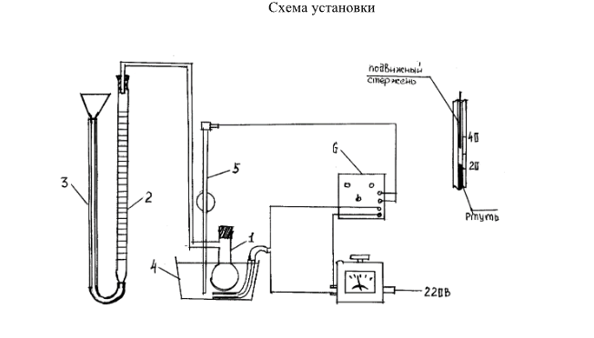

Наблюдение за скоростью разложения производится газометрически по объему выделяющегося кислорода. Прибор состоит из реакционной колбы (1), бюретки (2), где собирается О2 , уравнительного сосуда (3), водяного термостата с подогревом (4), контактного термометра (5) и реле (6). Контактный термометр, соединенный с реле, дает возможность поддерживать в термостате заданную температуру.
